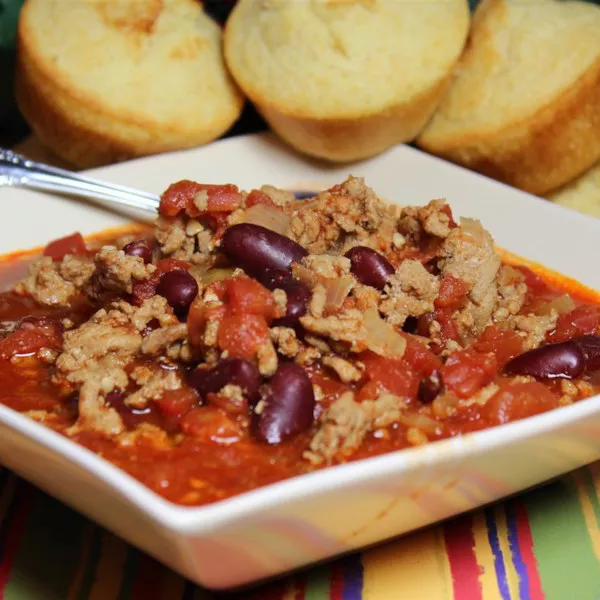

Turkey Chili Recipe

Description
This turkey chili recipe is very simple but hearty with plenty of flavor. Make this.
Ladle the leftovers into freezer bags, leaving about an inch of space at the top
(the chili will expand as it freezes). Seal, then wrap the whole thing in foil. Freeze flat
for up to three months. Thaw in the refrigerator overnight or reheat the frozen chili on the stove.
Ingredients
- 1 ½ teaspoons olive oil
- 1 pound ground turkey
- 1 onion, chopped
- 2 cups water
- 1 (28 ounce) can canned crushed tomatoes
- 1 (16 ounce) can canned kidney beans - drained, rinsed, and mashed
- 1 tablespoon garlic, minced
- 2 tablespoons chili powder
- ½ teaspoon paprika
- ½ teaspoon dried oregano
- ½ teaspoon ground cayenne pepper
- ½ teaspoon ground cumin
- ½ teaspoon salt
- ½ teaspoon ground black pepper
Steps
- Heat oil in a large pot over medium heat. Add turkey; cook and stir until evenly browned,
6 to 8 minutes. Stir in onion and cook until tender.
- Add water; mix in tomatoes, kidney beans, and garlic. Stir in chili powder, paprika,
oregano, cayenne pepper, cumin, salt, and pepper.
- Bring to a boil. Reduce heat to low, cover, and simmer for 30 minutes.
Back to Home Page